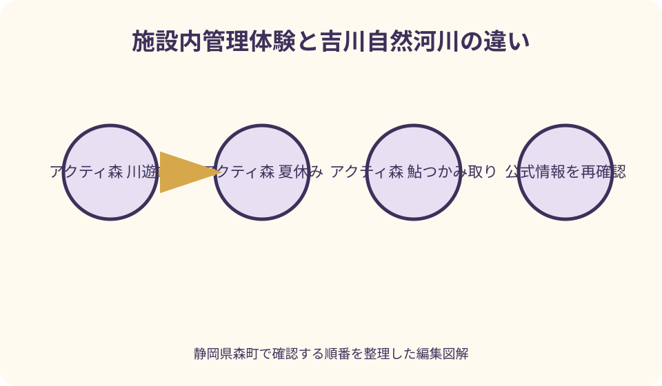
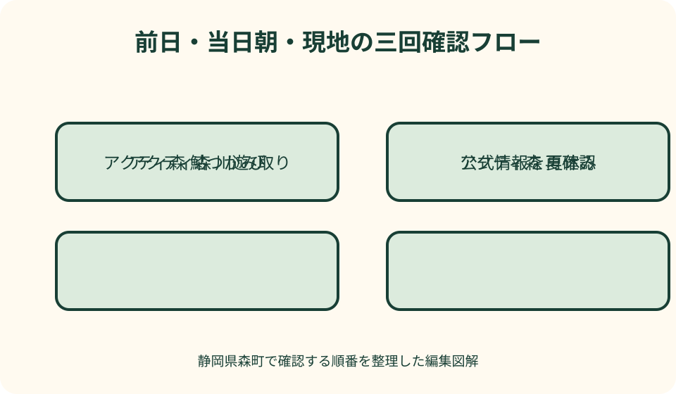

アクティ森｜最終確認 2026-08-10
静岡県森町・アクティ森の川遊びと夏休みガイド｜吉川の安全確認と着替え準備
アクティ森の夏の水辺は、施設が日時・場所・参加条件を定める体験と、流れや水位が常に変わる吉川を分けて考えます。過年度には敷地内の小川で鮎のつかみ取りが行われましたが、2026年の実施日、対象年齢、料金、予約、焼き上げ提供は公開情報だけで確定できません。出発前にアクティ森へ電話し、当日の実施と自然河川へ入ってよい範囲を確認し、前日上流で雨があれば晴れていても水へ入らない判断をします。

最初に分ける——アクティ森の管理体験と吉川の自然河川は別物
アクティ森は清流吉川のほとりにある複合施設ですが、施設の敷地内で運営者が受付する水辺体験と、吉川そのものへ自由に入る行為は同じではありません。受付、時間、人数、装備が決められた体験は係員の管理下で参加し、自然河川は立入可否、水位、流速、河床を自分たちが確認すべき場所として分けます。
森町の議会資料では、過年度にアクティ森の敷地内の小川で鮎のつかみ取りを行い、吉川を活用したカヌー等も実施した記録があります。この記録は2026年夏の開催証明ではありません。鮎、カヌー、SUPなどを目当てにするなら、訪問日、受付、年齢、予約、装備、料金を現行運営者へ聞きます。
観光協会が案内する吉川渓谷は、上流部で川が岩の谷間を流れ、カワセミやアマゴが生息する自然景観です。ここをアクティ森の水遊び場の延長と考えず、銚子の淵など深さの分からない場所へ子どもを入れません。景観を見る場所と水へ入る場所を地名だけで結びつけないことが重要です。
到着後は、駐車してすぐ川へ向かわず、施設受付で当日利用できる場所と禁止区域を確認します。ロープ、看板、係員の指示が前回訪問と違っても、当日の案内を優先します。許可範囲が不明なら水へ入らず、岸から観察するか屋内体験へ切り替えます。
出発前の三段階確認——上流の雨、現地の水位、施設の中止判断
川遊びの日は、現地の天気予報だけで判断しません。前日から当日朝にかけて吉川上流域で雨が降ったか、気象庁の警報・注意報、国土交通省の川の防災情報を確認します。自宅や施設周辺が晴れていても、上流の降雨で水位と濁りが変わる可能性を残します。
次に、アクティ森へ電話して水辺体験の開催、中止、開始時刻、受付場所を確認します。施設全体が開いていても、川の状態や雷、増水、設備点検で個別体験だけ中止になることがあります。ウェブに営業中と表示されても、水へ入れることの保証には使いません。
最後に現地で、水の色、流れの速さ、漂流物、河原の濡れた跡を大人が確認します。濁りが強い、枝が流れている、水音が大きい、普段より高い位置まで濡れている場合は、受付で安全と言われた特定体験以外へ勝手に入らず、家族全員を岸から離します。
雷鳴、急な冷風、黒い雲、雨粒が出たら、予定終了時刻を待ちません。水から上げ、河原や木の下に留まらず、係員が示す建物へ移動します。荷物を取りに戻ることより子どもの人数確認を先にし、再開は自分たちで決めず施設の案内に従います。
鮎のつかみ取りを確認する——過年度実績を今年の予定へ置き換えない
森町の過年度公式案内には、アクティ森で夏限定の鮎のつかみ取りが行われ、1日複数回の実施や、つかんだ鮎を塩焼きにする内容が記録されています。しかし開催日、回数、料金は年度ごとに変わり得ます。2026年8月10日時点で本記事は今年の実施を断定せず、電話0538-85-0115を確認先とします。
問い合わせでは、訪問日、参加人数、子どもの年齢を伝え、予約の要否、当日枠、集合時刻、素足の可否、貸出品、魚の扱い、焼き上がりまでの待ち時間を聞きます。参加料金だけを聞くと、焼き代や追加分、キャンセル条件が分からないため、支払いの全体を確認します。
鮎をつかむ体験は、生き物へ触れ、その後に食べる工程が含まれる場合があります。子どもへ事前に説明し、捕まえるだけの遊びとして扱いません。魚へ触れられない、食べられない、骨のある魚が難しい場合は、見学可能か、別の水辺観察へ替えられるかを施設へ相談します。
過去の写真を見て同じ水量、同じ設備、同じ服装で参加できると考えないことも大切です。当日の水深、足場、運営方法に合わせ、係員の説明前に小川へ入れません。開始時刻に遅れた場合の振替や返金も現行条件を確認し、交通渋滞を見込んで早めに到着します。

子どもの年齢差を組み立てる——一番小さい子を基準に範囲を決める
家族で川へ行くときは、泳げる上の子ではなく、一番小さい子が安全に立てるかを基準にします。施設体験に年齢条件がある場合、下の子を岸で見る大人と参加する上の子へ同行する大人を分けます。一人の保護者が水中と岸の両方を同時に監督する計画は立てません。
幼児は浅い場所でも転倒すると顔が水につき、流れに足を取られます。膝下だから安全という表現を使わず、手の届く範囲に大人一人を固定します。ライフジャケットが必要か、施設で指定品があるかを聞き、浮具を着けたから目を離せるとは考えません。
小学生以上でも、自然河川で流れを横切る、岩から飛び込む、上流へ単独で進むことを許しません。川底は見た目より滑り、同じ場所でも一歩で深さが変わります。施設が示した活動範囲から出ず、兄弟同士だけで見守らせないよう大人の配置を決めます。
水を怖がる子には入水を強制せず、岸から水音を聞く、石の形を観察する、施設内の展示や創作へ移る役割を用意します。夏休みの思い出を全員同じ写真にするより、その子が止まりたい場所を尊重し、家族を二班に分ける方が安全です。
靴と服装——脱げない水辺用靴、速乾服、肌を守る重ね方
足元は、かかとが固定され、濡れた石でも脱げにくい水辺用の靴を候補にします。ビーチサンダルは流されやすく、裸足は石、枝、熱い地面から足を守れません。施設体験で指定する靴があるか確認し、普段の運動靴を濡らす場合は帰り用を別に用意します。
服は乾きやすく、濡れて重くなりにくいものを選びます。水着だけで長時間過ごさず、日差しや擦り傷を防ぐ上着を重ねます。綿の厚い服は濡れると冷えやすいため、体験後すぐ着替えられるよう、子ども一人ずつ上下と下着を袋へ分けます。
帽子は日陰の少ない移動で役立ちますが、水中で視界を遮る形や、流される飾りのある物は避けます。眼鏡やサングラスには落下対策をし、首へ絡む長いひもを子どもへ付けません。アクセサリー、スマートフォン、車の鍵は防水袋へまとめて大人が管理します。
ライフジャケットは体格に合う物を選び、股ベルトや留め具を正しく締めます。家庭の浮き輪や腕用浮具を同じ代用品とせず、施設が貸し出すか、持参品を使えるかを予約時に聞きます。着用後も岸からの距離と大人の手の範囲を変えません。
着替えと荷物——濡れる前と濡れた後を袋で分ける
着替えは人数分を一袋にせず、子どもごとに上下、下着、靴下、タオルをまとめます。濡れた子を待たせず渡せるよう、袋へ名前を書きます。予備のタオル一枚、車の座席を守る大判タオル、濡れ物用の口が閉じる袋も別に用意します。
更衣室、シャワー、コインロッカーの有無と利用条件は、現行施設へ確認します。あると思って水着で来場せず、車内での着替えを前提にもせず、指定された場所を利用します。混雑時は順番を待つため、体を冷やさない羽織りをすぐ出せる位置に置きます。
水へ持ち込む物は最小限にし、飲み物、救急用品、連絡手段は岸の担当者が管理します。貴重品を河原のレジャーシートへ放置せず、施設の保管方法を確認します。河川が増水した場合に荷物を拾うため戻らなくてよいよう、置く位置も水際から離します。
帰宅後は水辺用靴と濡れ物を密閉したまま長時間放置せず、洗浄と乾燥をします。ただし河川の生き物、石、砂を土産として持ち帰らず、採取に関する決まりへ従います。観察は写真やメモで残し、自然物を元の場所から動かしません。

日陰、休憩、水分——水の中でも熱中症を前提に時間を切る
川の水が冷たくても、頭と肩は強い日差しを受けます。遊び始める前に日陰または施設が認める休憩場所を確認し、飲み物を置きます。自然の木陰へ勝手に陣取るのではなく、落枝、斜面、増水時の退路を見て係員の案内に従います。
休憩は子どもが疲れたと言うまで待たず、短い間隔で全員を水から上げます。顔色、返事、歩き方、唇の色を確認し、水分と塩分を取ります。寒がる、震える、ぼんやりする場合は日差しが強くても体を拭いて着替え、再入水しません。
飲み物は人数と滞在時間に合わせ、車へ置いた予備まで含めます。河川水を飲まず、手洗いできない状態で食べ物へ触れないようにします。鮎の塩焼き等を食べる場合も、提供場所と手洗いの指示に従い、水辺へ食べ物を持ち込みません。
日焼け止めや虫よけは、使用場所と水環境への配慮を考え、入水直前に大量に流れる塗り方を避けます。子どもの肌に合う物を自宅で確認し、施設の注意事項があれば従います。日差しが危険な時間帯は、早めに終了して屋内へ移ります。
時間割を作る——朝の確認、短い入水、昼前撤収を基本にする
夏休みの基本案は、朝に気象と施設へ確認し、開場後の早い時間に受付、短い水辺活動、着替え、昼食または屋内体験です。午後の最も暑い時間まで川に残らず、雲の発達や上流の雨が起きる前に終えられるよう、終了時刻を先に決めます。
施設公式の開場時間は全体の目安であり、水辺体験の開始や最終受付とは限りません。2026年の受付回、集合時間、遅刻時の扱いを確認し、開始直前に駐車場へ着く行程を避けます。夏休みの道路混雑と着替え準備を含めて到着時刻を逆算します。
一回の活動を長くするより、入る、休む、状態を確認するという小さな区切りを繰り返します。大人は交代で水辺担当と岸担当を務め、交代時に子どもの人数、装備、体調を声に出して引き継ぎます。誰かが見ているだろうという状態を作りません。
昼食予約や帰りのバスがある場合、体験終了から着替え、手洗い、移動までの時間を足します。濡れたままレストランや車へ急がず、予定に遅れそうなら川遊びを早く切り上げます。遊ぶ時間を確保するために安全工程を削りません。
自然観察の約束——生き物を追わず、岩場と深みへ近づかない
森町公式は吉川を太田川上流の自然豊かな河川として紹介し、観光協会はカワセミやアマゴが生息する渓谷と案内しています。生き物がいることは捕獲してよいという意味ではありません。見つけた魚や昆虫を追って活動範囲から出ず、採取の可否を施設へ確認します。
上流の吉川渓谷は岩の谷間を流れ、銚子の淵など景観の見所があります。淵は写真映えする水面でも深さと流れが読みにくく、子どもの水遊び先として紹介しません。観察する場合も、濡れた岩の縁や急斜面へ進まず、道路と私有地の境界を守ります。
石を積んで流れを変える、魚を囲う、川底を大きく掘る行為は、水生生物の環境と次の利用者へ影響します。子どもには「見つける、数える、色を記録する」役割を渡し、元の場所へ手を加えない観察にします。写真も足場を確保してから撮ります。
カワセミを見つけても近づいて追い回さず、静かに距離を取ります。生き物の名称を断定できなければ、色、形、いた場所をメモし、帰宅後に町の自然資料で調べます。夏休みの学びは捕まえた数ではなく、環境と行動を記録することで成立します。
中止時の代案——水を使わず、森町の自然を屋内から読む
増水、雷、高温、満席で水辺体験が中止なら、まずアクティ森で当日利用できる屋内創作を確認します。町の旧案内には陶芸、和紙、草木染めがありますが、2026年の実施状況、対象年齢、予約枠は運営者へ聞きます。古い一覧だけを見て移動しません。
陶芸が空いていれば、川で拾った物を持ち込むのではなく、吉川の流れやカワセミの色を紙へ描き、器の模様にできるか講師へ相談します。和紙や染めが実施されていれば、森町の植物と水の関係を聞く機会にします。材料を勝手に採取しません。
施設内が満席なら、森町観光協会の案内から町なかの文化施設、寺社、観光案内所へ切り替えます。豪雨時は渓谷や河川沿いの代替地を選ばず、安全な屋内へ移ります。吉川渓谷の景観見学を中止日の代案にするのは、同じ水位危険を受けるため不適切です。
帰宅を選ぶことも正しい代案です。子どもには、せっかく来たから入るのではなく、水が増えたら入らないという判断自体が川を学ぶことだと伝えます。施設の新着情報を確認して別日を予約し、次回は天候と体験枠の二条件がそろった日に訪れます。
良い点——施設の体験と吉川の自然を比較して学べる
アクティ森周辺の良い点は、受付と時間がある施設体験と、刻々と状態が変わる自然河川の違いを、同じ吉川の流域で考えられることです。管理体験では係員の指示を学び、自然河川では入らない判断も含めて水位を読む。二つを混ぜなければ夏休みの学びが深まります。
森町の自然資料には、吉川を含む太田川水系の魚や植物、生き物の記録があります。川遊びを消費するだけでなく、なぜ上流に岩場が多いのか、どんな鳥や魚がいるのかを帰宅後に調べられます。現地で分からない名称を無理に決めないことも観察の姿勢です。
鮎のつかみ取りが当年実施される場合、生きた魚へ触れ、食べるところまで考える機会になります。ただし、イベントの楽しさは開催確認と係員の管理があってこそです。過年度の人気企画を根拠に無断で魚を捕る行為へ広げないことが重要です。
水辺を短時間で終え、屋内創作や食事へ移れる複合施設である点も家族には助けになります。全日を川だけに固定せず、暑さ、子どもの体力、天候で比重を替えられます。その柔軟さを生かすため、第二候補を予約前から用意します。
注文したい点——水位、中止、利用範囲を当日一画面で示す案内
利用者として注文したい点は、施設サイトで水辺体験ごとに「開催」「中止」「残席」「当日受付終了」を更新時刻付きで表示することです。施設全体の営業表示と分ければ、遠方から来る家族が、開場しているのに鮎やカヌーは休止という違いを出発前に判断できます。
自然河川についても、施設管理区域、立入禁止、観察のみの場所を簡略地図で示し、増水時の退避方向を掲示すると安全確認に役立ちます。吉川渓谷の観光案内と、アクティ森で水へ近づける範囲を別の色にし、同じ川だから移動できるという誤解を防げます。
子ども向け体験には、対象年齢、必要な大人の人数、靴、ライフジャケット、着替え場所、所要時間を一覧にしてほしいところです。料金だけでなく、焼き上げ待ちや装備レンタルを含むかも分かれば、家族の帰路と予算を無理なく組めます。
中止理由を「天候不良」だけで終えず、雷、濁り、増水、高温など可能な範囲で示すことは、利用者が次回の判断を学ぶ助けになります。利用者側も開催を求めて判断変更を迫らず、施設が中止した理由を子どもと確認して代案へ移ります。
対案・結論——前日、朝、現地の三回で入水可否を判断する
実用的な計画は、前日に上流の雨と警報を確認し、当日朝に施設へ体験開催を電話確認し、現地で水位と利用範囲を再確認する三段階です。一回でも条件が合わなければ自然河川へ入らず、施設が管理する別体験または屋内へ切り替えます。
持ち物は、脱げない水辺用靴、体格に合う装備、速乾服、子ども別の着替え袋、タオル、飲み物、濡れ物袋を基本にします。貸出品、更衣場所、ロッカーは現行施設へ確認し、あると決めません。岸担当と水辺担当の大人を明確にします。
鮎のつかみ取りは過年度実績を今年の予定に置き換えず、2026年の実施日、予約、年齢、料金、魚の提供方法を0538-85-0115で確認します。実施がなくても川へ魚を捕りに行かず、自然観察、屋内創作、町なか周遊へ目的を替えます。
川遊びの成功は長く入ることではなく、全員の人数を確認し、雷や濁りの前に上がり、乾いた服で帰れることです。吉川の自然を尊重し、入らない日もある前提で計画すれば、夏休みの一日を安全判断の学びとして残せます。
大石の視点——子どもへ水の色を説明させてから入る
私なら、到着してすぐ「遊んでいい」とは言わず、子どもに水の色、流れている枝、水音、岸の濡れた線を見てもらいます。前回の写真と違う点を一つ言葉にできれば、川は同じ場所でも毎回同じではないと理解する入口になります。
大人は安全確認を子どもへ丸投げせず、最終判断を引き受けます。その上で、入る前、休憩時、終わる時に同じ観察項目を繰り返します。水が濁った、音が変わった、雲が黒くなったという変化があれば、理由を説明して活動を終えます。
鮎をつかめたか、何分泳げたかだけを日記の中心にせず、施設体験と自然河川の違い、着替え袋の工夫、中止時に選んだ代案も記録します。体験していないことを成功談にせず、公式情報、当日の案内、自分たちの観察を分けて書きます。
吉川は観光の背景ではなく、上流の雨とともに動き、生き物の環境でもあります。子どもへ残したいのは、水辺へ行けば必ず入れるという期待ではなく、見て、聞いて、確認し、今日は入らないと決められる感覚です。その判断ができれば次の夏にもつながります。
公式情報・確認先
掲載内容は次の一次情報を基礎に整理しました。営業、料金、催し、交通は変わるため、出発前または手続き前にリンク先で最新情報を確認してください。
- 静岡県森町 森町体験の里 アクティ森（静岡県森町、2026-08-10確認）
- 静岡県森町 アクティ森リニューアルオープン（静岡県森町、2026-08-10確認）
- 静岡県森町 森町の自然（静岡県森町、2026-08-10確認）
- 静岡県森町 森町の動物（静岡県森町、2026-08-10確認）
- 静岡県森町観光協会 アクティ森（静岡県森町観光協会、2026-08-10確認）
- 静岡県森町観光協会 吉川渓谷（静岡県森町観光協会、2026-08-10確認）
- アクティ森 現行公式サイト（actymori.co.jp、2026-08-10確認）
- 気象庁 防災情報（www.jma.go.jp、2026-08-10確認）
- 国土交通省 川の防災情報（www.river.go.jp、2026-08-10確認）